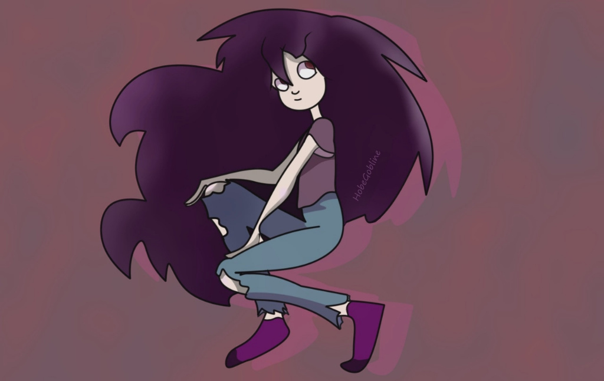
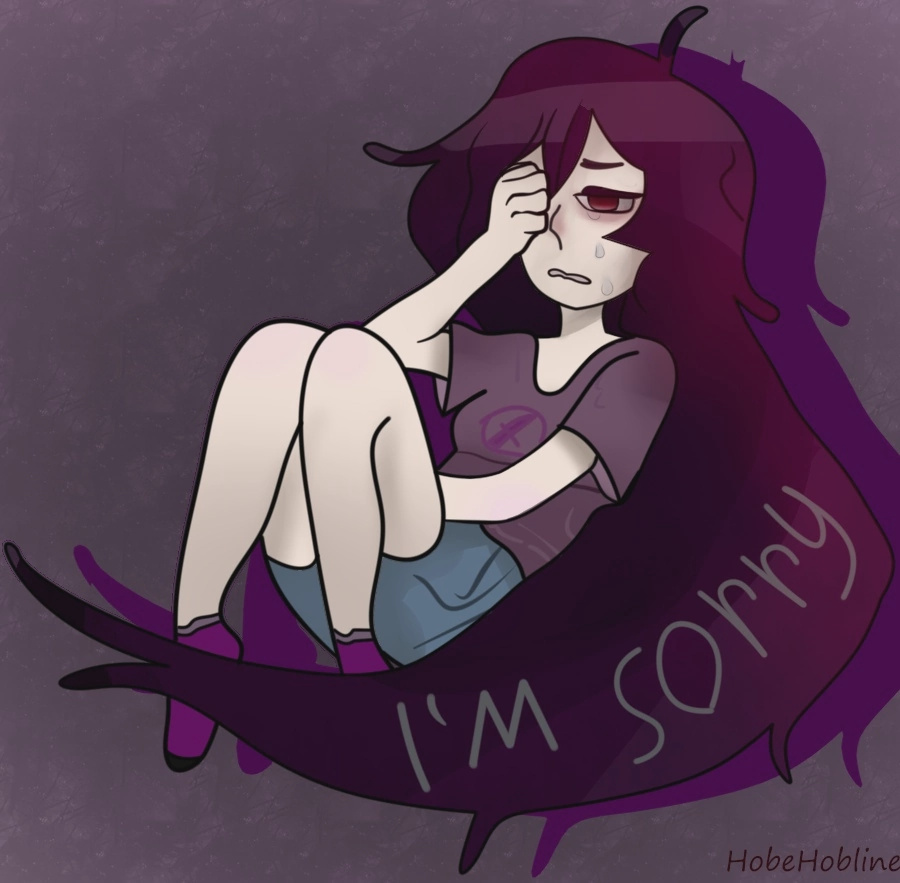
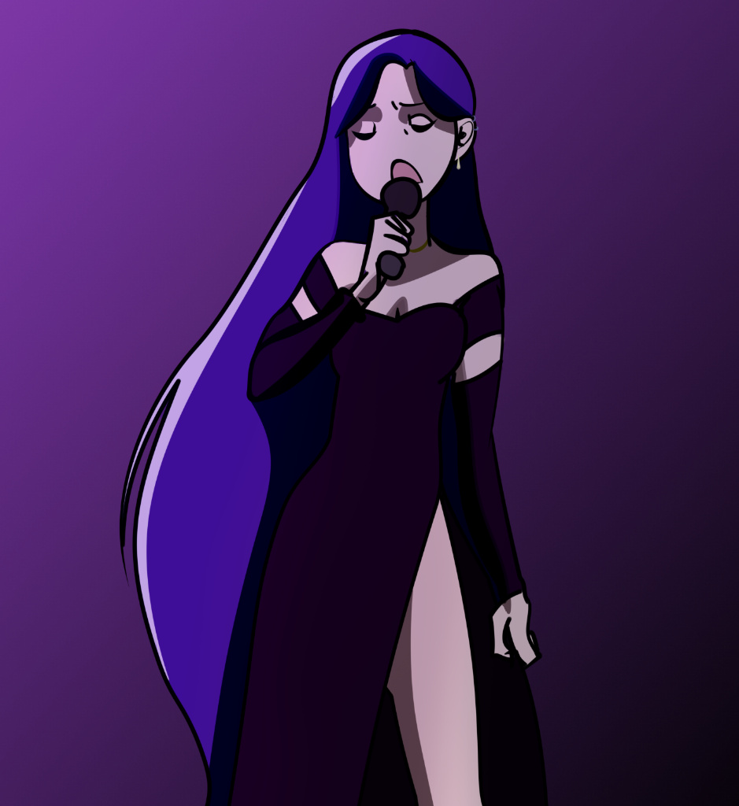

Гвен Райдер
«Жить ради других, это так тупо.....похоже, я одна из тупых?»
Гвен Райдер (англ. Gwen Rider) — одна из сильнейших и самых скрытных версий Глюка во вселенной Эферис РП. Она является постоянным гостем музыкального коллектива MGQ
Содержание
История
Падение DarkTale и Игры Разума
В своей родной АУ под названием DarkTale Гвен жила счастливой жизнью, сохраняя все воспоминания о прошлом. У неё был любимый дом, друзья и родной брат Том. Однако этот мир представлял собой корпоративную антиутопию, где местная версия Эдриана и его корпорация захватили абсолютную власть. В этот момент местная версия Рейвенхелла — D!Рейв — решает устроить кровавую игру на выживание. Путем жестоких пыток и уничтожения личности он издевался над Гвен, а затем на её глазах убил всех её друзей.
Не выдержав мучений, Гвен срывается и жестоко убивает Рейва. В этот момент её сломленный разум подпадает под влияние таинственного голоса — как выяснится позже, это была Оливия. Ради «общего блага» и избавления мира от зла голос заставляет Гвен убить некую темную сущность. Когда пелена спадает, Гвен с ужасом осознает, что собственными руками убила своего брата Тома. Ненависть к себе и неконтролируемый всплеск магии приводят к тому, что Гвен полностью уничтожает родную АУ, открывая разлом в Мультивселенную, и проваливается в классический мир Эфериса.
Однако Гвен покинула уничтоженный мир не одна. В момент распада её АУ к её израненной душе привязалась уникальная сущность — девушка-Теневойд (представительница древней расы живых теней) по имени Никс. Эта теневая спутница стала её незримым симбиотом, разделяя с Гвен боль утраты, усиливая её тёмную магию и сопровождая в одиноких скитаниях по новым мирам.
Жизнь на дне и Новые Связи
Оказавшись в новой АУ без гроша, связей и понимания местного мироустройства, Гвен стремительно скатывается на дно. Выживая в тесной, грязной каморке отеля, она вынуждена браться за сомнительные заказы ради куска хлеба. Так она принимает контракт от Джеффа — убить Джерри Райса. Однако Гвен не идет на реальное убийство: она мастерски создает иллюзию его смерти, позволяя хитрому Джерри остаться в живых, пока заказчик уходит в полной уверенности в успехе.
Обеспечив себе временное прикрытие, Гвен начинает исследовать другие АУ. В ходе этих странствий она находит мир Пёрпла, с которым у неё завязывается крепкая дружба. В этот же период она знакомится с Чанзи и, найдя в ней родственную душу, моментально решает, что теперь они — лучшие подруги навек. Вскоре после этого Гвен находит таинственный артефакт DarkShow. Именно эта находка становится поворотной точкой: во сне Гвен начинают являться сущности масок Комедии и Трагедии, открывая ей путь к новым, пугающим возможностям.
Любовь, MGQ и Раскол Мироздания
Встав на ноги, Гвен выкупает новый дом у Крисса (брата Беллатрисы). Она всё больше времени проводит с Пёрплом, хоть и скрывает своей влюбленности. Когда на Пёрпла совершается нападение, Гвен защищает его и предлагает переехать к ней. Позже, под влиянием разговоров с Чанзи и бутылки виски, Гвен окончательно открывается Пёрплу, и они становятся парой.
Однако во время внезапного нападения Мэтта Гвен с ужасом осознает: привязанность и страх потерять любимого сделали её слабее в бою. Несмотря на это, таинственная сущность в её голове продолжает толкать её вперед. Гвен вступает в музыкальную группу MGQ, часто пьет с Пёрплом и старается жить спокойно, даже забыв про DarkShow. Но всё меняется с появлением Дженнифер и Ньюва (New!Глюка).
Когда Код внезапно пропадает, Гвен выходит на след Найтмера. И тут маска неряшливой алкоголички спадает: она нападает на него не ради спасения подруги, а преследуя собственную хладнокровную цель. Пересечение с Ньювом становится финальным триггером. Таинственный голос берет верх, и Гвен меняет сторону, начиная без разбора крошить всё на своем пути и превращаясь в главную угрозу для Отряда Надежды.
В кульминации этой арки вскрывается жуткая правда: всё это время её вела Оливия, находящаяся внутри Дженнифер. Дженнифер признается, что именно она (под контролем богини) заставила Гвен убить брата ради «общего блага» — освобождения Мультивселенной от магии. Используя DarkShow, маску Страха, а также Комедию и Трагедию, Дженнифер уничтожает старый мир. Но, осознав чудовищность своей ошибки в конце созданной утопии, она возвращает реальность обратно.
Чистый Лист
После всех этих потрясений и возвращения мира, старые травмы накрывают Гвен с новой силой: она начинает пить по-черному. Пёрпл, оставаясь её главной и единственной опорой, изо всех сил пытается вытащить её из этой ямы. Понимая, что в Эферисе ей не найти покоя, они принимают решение оставить всё позади. Пара переезжает в отдельную, закрытую АУ Пёрпла, чтобы начать жизнь с абсолютно чистого листа. Теперь они просто живут для себя, занимаются музыкой, а Гвен позволяет себе выпить лишь изредка, обретя свой хрупкий, но заслуженный счастливый финал.
Личность и характер
На первый взгляд Гвен может показаться лишь грубым «злым котёнком», но на деле её личность потрясающе многослойна. Это человек с тяжелейшим посттравматическим синдромом, вынужденный прятать свою боль за несколькими плотными масками.
- Внешний фасад (Маска неряшливой пьянчужки): Дерзкая, грубая и абсолютно безответственная. Гвен часто витает в облаках, может забыть обещание, данное буквально вчера, и постоянно прикладывается к выпивке или энергетикам. В быту она весьма неряшлива (часто ходит в грязной майке) и совершенно не умеет готовить. В бою она специально прикидывается слабой. Её фирменная привычка — называть всех «котятами». Весь этот образ — мощный защитный механизм. Ей выгодно казаться жалкой и беспечной, чтобы от неё ничего не ждали и, самое главное, чтобы к ней никто не привязывался.
- Внутренний надлом (Скрытая уязвимость и вина): Когда маска грубости трескается (особенно наедине с алкоголем или Пёрплом), открывается её истинное состояние. Гвен отчаянно ненавидит себя за уничтожение родного мира и смерть брата. Несмотря на весь напускной цинизм, она невероятно преданна и добра внутри. Её любовь к Пёрплу почти болезненная — она боится потерять его больше собственной жизни. Её фраза «Жить ради других, это так тупо... похоже, я одна из тупых?» идеально описывает этот внутренний конфликт: она отчаянно хочет быть эгоисткой, но не может отвернуться от тех, кого любит.
- Сорванная маска (Холодная угроза): Это та сторона Гвен, которую видят единицы (и часто в последние секунды своей жизни). Когда у неё появляется абсолютная цель, или когда её вела Оливия, от забавной алкоголички не остается и следа. Гвен становится абсолютно хладнокровной, кровожадной и пугающе сильной. В этом состоянии она не боится ни смерти, ни боли, ни других сильных сущностей. Она просто идет напролом, готовая на любые, даже самые радикальные действия.
Внешность
Внешность Гвен — это сочетание природного изящества и подчеркнуто небрежного, свободного стиля. Сейчас она выглядит как статная и уверенная в себе молодая женщина, которая ценит комфорт и самовыражение выше строгих канонов.
- Силуэт и рост: Гвен обладает внушительным ростом в 182 см и весом в 68 кг. У неё подтянутая фигура и «идеальное» лицо с тонкими, выразительными чертами, которые остаются привлекательными даже при её подчеркнуто «похуистичном» настрое.
- Волосы и глаза: У Гвен густые, очень длинные волосы глубокого тёмно-фиолетового оттенка, ниспадающие крупными, ухоженными волнами почти до бедер. Глаза — большие, насыщенного фиолетового цвета.В её взгляде теперь читается не усталость, а задор, азарт и легкая похуистичная ухмылка.
- Стиль одежды: Её гардероб выдержан в стиле «расслабленного гранжа». Обычно Гвен носит облегающую фиолетовую майку, поверх которой накидывает объемную тёмную куртку или зип-худи. Образ дополняют узкие синие джинсы с разрезами на коленях и поношенные высокие кеды.
- Детали и вайб: В качестве аксессуаров она предпочитает лаконичный чокер и аккуратный пирсинг в ухе. Общее впечатление от её облика сейчас — это абсолютная внутренняя свобода. Гвен больше не выглядит измотанной; в её расслабленной походке и уверенной осанке чувствуется человек, который наконец-то начал жить в своё удовольствие.
Способности и Арсенал
В бою Гвен представляет собой невероятно опасного противника, который мастерски скрывает свой истинный потенциал. Она обладает обширными базовыми знаниями магии, но её настоящая сила кроется в комбинации способностей Глюка и мрачных искусств.
- Классический Арсенал Глюка: В её базовый набор входят Глюк-бластеры (ГлБ), разрушительные Лучи Атаки (ЛА), а также призыв магических ножей для ближнего и дальнего боя. Разумеется, она владеет Глюкопортацией — мгновенным перемещением в пространстве с характерными искажениями. При необходимости она способна высвободить и использовать абсолютно всю силу своей души Глюка для тотального уничтожения.
- Тёмная магия: Гвен активно использует Тёмную магию. В её арсенале есть тёмный огонь, чёрные молнии, связывающие нити и жестокие вращающиеся пилы.
- Darkshow: Тёмная магия у неё обучена, но так же есть артефакт тёмных богов(Комедии и Трагедии), это Darkshow, книга запретной магии и опасных техник
- Магия Теней: Это главный козырь Гвен. Приняв в себя сущность Теневойда, она получила власть над тенями. Её скрытая способность позволяет ей буквально погружаться в тени, перемещаться сквозь них и создавать из тьмы физические теневые объекты.
Слабости
Несмотря на колоссальный боевой потенциал, Гвен имеет ряд критических уязвимостей, большинство из которых кроются в её сломанной психике.
- Зависимость от цели: Как метко подмечали её враги, Гвен нуждается в четкой цели, чтобы открыть всю свою силу. Без мотивации она сражается вполсилы, может казаться слабой и даже поддаваться, не имея воли к победе.
- Эмоциональная уязвимость: Её любовь к Пёрплу — её главная слабость. Угроза его жизни моментально лишает Гвен хладнокровия. В страхе за него она становится уязвимой, может начать паниковать или совершать фатальные ошибки в бою.
- Клаустрофобия: Гвен панически боится замкнутых стен. Если запереть её в тесном пространстве (например, магическим барьером), у неё может начаться тяжелая паническая атака, полностью блокирующая её магию и волю к сопротивлению.
Связи с персонажами
Семья
- Пёрпл: «Мой миленький и лучший котёнок, люблю тебя всем сердцем. Хоть ты и глупышка у меня»
- Dark!Том (Её брат): «Я уже...сделала всё, чтобы попытаться искупить вину, но...я до сих пор боюсь закрывать глаза...прости меня, Брат..»
- Никс: «Моя лучшая подруга, очень приятно знать, что я никогда не одна...куда неприятнее пытаться уговорить её отойти, если я захочу побыть с Пёрполом наедине»
Глючная Семья
- Глюк Райдер: «Он так вырос на самом деле...или я одна это вижу? Он раньше был, ну прям дитетькой, а сейчас с двумя богами, у него есть классная девушка, да и он словно...сильно изменился в хорошую сторону»
- Черри Райдер: «Окей, ладно, допустим ТЫ решил, что круто отобрать у моей лучшей подруги её дочку...но..Блять, Черри, я тебя люблю, но ебать твою мамашу, ты реально тупой мудак или притворяешься? Хватит творить хуйню...а так, всё ровно ты мне друг и братан»
- Кэйсси Райдер: «Я даже не знаю, куда он пропал и почему...я....я хотела уже у него попросить прощение и...быть ближе...эх»
- Генри Райдер: «Ты прям...Как если бы взяли нашего Глюка, поместили на 2 года в коллектив Металики, а затем взяли к байкерам...Это ОХУЕТЬ как круто»
- Френк Райдер: «Бедняжка...потерял АУ...зато друзей нашёл, наверное...В любом случае, твоя улыбка меня продолжает пугать, но..это уже личное, не бери в голову»
- Ньюв (Крис): «Сдох и Сдох, СЛАВУ БОГУ. Блять, врагам бы не пожелала встречу с тобой. Гори в аду, сучёныш»
друзья
- Чанзи Райс: «Моя ЛУЧШАЯ подруга! Я...слышала, что ты выбралась из Ада и помирилась с Дженнифер...ты молодец у меня по любому будешь, подруга.»
- Джеррими Райс : «Кхм...Ну...друзья, наверное? В любом случае, муж моей подруги, мой друг)»
- Дженнифер Райс: «Послушай...всё уже прошло. Мы обе сделали ошибки...кто-то, как ты например, больше...кто-то меньше...в любом случае, не злюсь на тебя за то, что...ты...заставила сделать....я с возрастом это поняла, но...серъёзно? ОН?....ты блять ненормальная, подруга»
- Коул Райс: «Милашка, но...Он же прям упрямый, как баран. Нет, не пойми за грубость, но мозг придумали, не чтобы он прохлаждался, да? В любом случае, он обояшка, так и ещё сын лучшей женщины»
- Беллатриса: «.....НЕ ТО ЧТОБЫ Я ЗАВИДОВАЛА, но...Я ведь тоже подруга Чанзи...Но, я...не важно, хах. Просто шучу. А без шуток, блять, у вас у всех фонтан от ебучего фиолетового панка? Вы....Я вас не пойму девочки...Да ладно, не волнуйся подруга»
- Том(Оригинальный): «...Мне было...немного странно, когда ты меня защищал и....я не достойна той заботы твоей. В любом случае, спасибо..ты мне помог»
- Ариана: «Господи, я надеюсь Глюк тебя охраняет как зеницу Ока? Вы же прям идеальная пара, самая пацифичное существо в мире, и врач. вы так мило смотритесь вместе :з »
- Кэтрин: «Я рада, что у вас с Томом всё хорошо, так держать»
- МС: «Да ладно, сильно не горячись на меня. Я всё же рада, что ты помог собраться в оригинальной АУ мне. И надеюсь, с Элиз у вас всё хорошо»
- Элизабет: «С МС глаз да глаз, он у тебя хороший такой...а..стоп...ты живёшь внутри его души..Ну, не мне осуждать, зато спрашивать не нужно, кто в вашей паре главный альфа-дух»
- Код: «Блять, ещё одна пропала. И с кем мне бухать?»
- СД: «Признайся, это ТЫ её украл? »
- Вики Дримур: «У-ти, настоящая маленькая Цундерочка :з Правда...тоже пропала с Кэйсси....быть может вы вдвоём сбежали и живёте спокойно? Хм...погоди, так Вики разве не Суккуб? Ууу, Кэйсси, ты попал на истощение?)»
- Эвилай Дримур: «Ты...типа Клона или...В что ты такое?»
Нейтрально
- Габриэль Винс: «Ты....Стал таким успешным....хм...а раньше был ТАКИМ занудой»
- Эмилия Стоун: «Вы странные все...в любом случае...нет, вы правда странные, и точка. »
- Стелла Дримур: «Уууу, белая ворона...Само мастерство вранья...Да?»
- Артур Дримур: «Раньше был Таким душкой, таким крутым...а щас будто покрылся плесенью. Фе...Эх»
Враги
- Рейвенхелл: «Психопат оказался бессмертным, ну пиздец...Зато теперь, тебе только и гнить в мусорке»
- Эдриан Морн: «Где-то в АУ Чанзи или типа того. Пусть там сидит и не высовывается»
- Все из Око: «Только попробуйте подойти ко мне или к Пёрплу, я и ваш Архипелаг, и вас самих разорву на куски»
- СГС (Альфред): «Ого, стал не щенком Смерти, а щенком Хаоса? Какой ты жалкий....Напомню тебе, я готова стоять с тобой 1 на 1, так что считай, что предупреждён, сучка. »
- Майк Венфир: «Психи не гниют...Ну и сиди там на цепи у Эдриана, страхаёбина»
- Лиза: «Какая ты сука, просто блять тебе сдохнуть мало будет...Я же просила ценить, а не разбивать сердце Кэйсси...Вот же сука. »
- Азриэль Дримур: «Ну ебать, какой важным был. Стал в итоге полу-зомби каким-то, а сейчас чёт не высовывается»
- Комедия и Трагедия: «Вы странные....рада, что вы оказались просто запретами лузерами. Спасибо кстати за книжку, удачи нахуй)»
Интересные факты
- Болтушка: Она обожает много и часто болтать, готова заболтать каждого человека
- Неряха: Гвен очень сильно неряшливая, она не знает слово "Аккуратность"
- Лео и Вики Стайл: Довольно шальная, в плане Лео, личность
- Проклятие Райдеров: Ужасно и Опасно готовит. Это проблема всех Райдеров, но у Гвен это в абсолюте
- Создание персонажа: Гвен была сильно вдохновлена персонажем "Марселин - Королевой Вампиров" из Мультсериала "Времени Приключений". Так же, образ Гвен был вдохновлён личным другом автора MicCherry - Фиёри
- Дизайн: Дизайн сильно отсылается к "Евангелион" к Мисате
- Сила: Является у меня одним из немногих персонажей человеческого уровня с около божественными способностями.
- Раса: Она человек, ни демон, ни "Аномалия". Она настоящий человек
- Ребут и Школа!РП: В предстоящем Ребуте и Школе!РП она является родной сестрой Глюка Райдера, а не его альтарнативной версией.
Галерея


